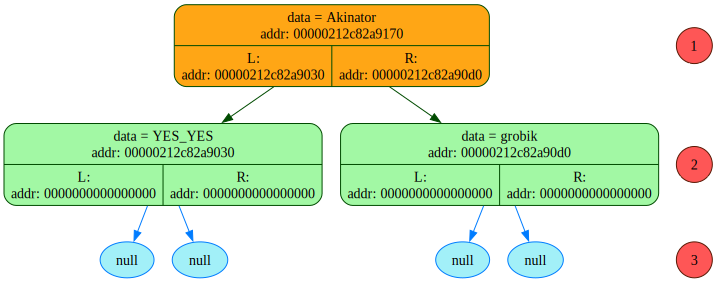
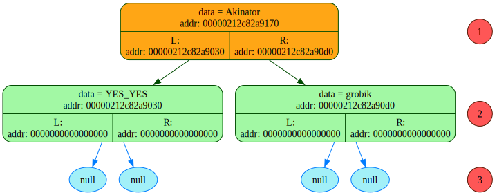

READ_file: addr buffer_adr = 2894503633008
=============================================================================
Symbol = <{>, his addr = 2894503633008
Symbol = < >, his addr = 2894503633009
Symbol = <">, his addr = 2894503633010
Symbol = <A>, his addr = 2894503633011
Symbol = <k>, his addr = 2894503633012
Symbol = <i>, his addr = 2894503633013
Symbol = <n>, his addr = 2894503633014
Symbol = <a>, his addr = 2894503633015
Symbol = <t>, his addr = 2894503633016
Symbol = <o>, his addr = 2894503633017
Symbol = <r>, his addr = 2894503633018
Symbol = <">, his addr = 2894503633019
symbol = <\r>, addr = 2894503633020
symbol = <\n>, addr = 2894503633021
Symbol = < >, his addr = 2894503633022
Symbol = <{>, his addr = 2894503633023
Symbol = < >, his addr = 2894503633024
Symbol = <">, his addr = 2894503633025
Symbol = <Y>, his addr = 2894503633026
Symbol = <E>, his addr = 2894503633027
Symbol = <S>, his addr = 2894503633028
Symbol = <_>, his addr = 2894503633029
Symbol = <Y>, his addr = 2894503633030
Symbol = <E>, his addr = 2894503633031
Symbol = <S>, his addr = 2894503633032
Symbol = <">, his addr = 2894503633033
symbol = <\r>, addr = 2894503633034
symbol = <\n>, addr = 2894503633035
Symbol = < >, his addr = 2894503633036
Symbol = < >, his addr = 2894503633037
Symbol = <{>, his addr = 2894503633038
Symbol = <}>, his addr = 2894503633039
symbol = <\r>, addr = 2894503633040
symbol = <\n>, addr = 2894503633041
Symbol = < >, his addr = 2894503633042
Symbol = < >, his addr = 2894503633043
Symbol = <{>, his addr = 2894503633044
Symbol = <}>, his addr = 2894503633045
symbol = <\r>, addr = 2894503633046
symbol = <\n>, addr = 2894503633047
Symbol = < >, his addr = 2894503633048
Symbol = <}>, his addr = 2894503633049
symbol = <\r>, addr = 2894503633050
symbol = <\n>, addr = 2894503633051
Symbol = < >, his addr = 2894503633052
Symbol = <{>, his addr = 2894503633053
Symbol = < >, his addr = 2894503633054
Symbol = <">, his addr = 2894503633055
Symbol = <N>, his addr = 2894503633056
Symbol = <O>, his addr = 2894503633057
Symbol = <_>, his addr = 2894503633058
Symbol = <N>, his addr = 2894503633059
Symbol = <O>, his addr = 2894503633060
Symbol = <">, his addr = 2894503633061
symbol = <\r>, addr = 2894503633062
symbol = <\n>, addr = 2894503633063
Symbol = < >, his addr = 2894503633064
Symbol = < >, his addr = 2894503633065
Symbol = <{>, his addr = 2894503633066
Symbol = <}>, his addr = 2894503633067
symbol = <\r>, addr = 2894503633068
symbol = <\n>, addr = 2894503633069
Symbol = < >, his addr = 2894503633070
Symbol = < >, his addr = 2894503633071
Symbol = <{>, his addr = 2894503633072
Symbol = <}>, his addr = 2894503633073
symbol = <\r>, addr = 2894503633074
symbol = <\n>, addr = 2894503633075
Symbol = < >, his addr = 2894503633076
Symbol = <}>, his addr = 2894503633077
symbol = <\r>, addr = 2894503633078
symbol = <\n>, addr = 2894503633079
Symbol = <}>, his addr = 2894503633080
symbol = <\r>, addr = 2894503633081
symbol = <\n>, addr = 2894503633082
symbol = <\0>, addr = 2894503633083
=============================================================================
onegin -> buffer_addr[0] = { "Akinator"
{ "YES_YES"
{}
{}
}
{ "NO_NO"
{}
{}
}
}
Тут должен быть один вызов
onegin -> buffer_addr[0] = { "YES_YES"
{}
{}
}
{ "NO_NO"
{}
{}
}
}
onegin -> buffer_addr[0] = {}
{}
}
{ "NO_NO"
{}
{}
}
}
onegin -> buffer_addr[0] = {}
}
{ "NO_NO"
{}
{}
}
}
onegin -> buffer_addr[0] = { "NO_NO"
{}
{}
}
}
onegin -> buffer_addr[0] = {}
{}
}
}
onegin -> buffer_addr[0] = {}
}
}
(Akinator(YES_YES)(NO_NO))
 (Akinator(YES_YES)(robit(bro)(YES_YES)))

(Akinator(YES_YES)(robit(bro)(YES_YES)))
